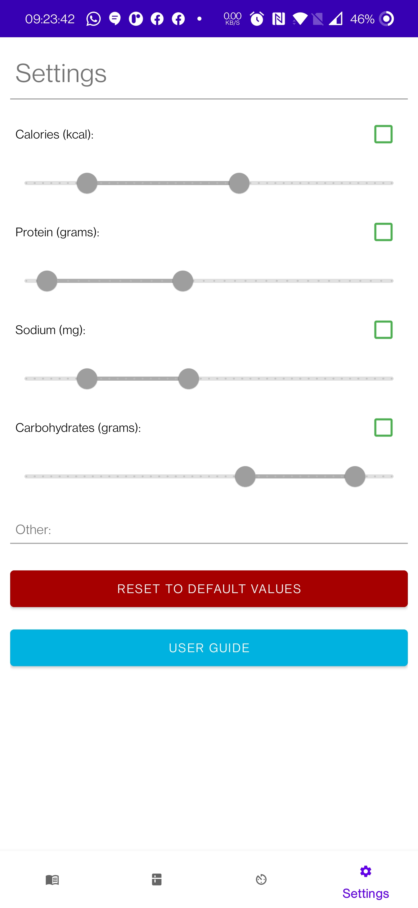

Application User Guide
Summary:
The Food Inventory Helper application aims to solve the problem of developing out-of-date food in your fridge.
By entering and maintaining the locally stored inventory, the user is presented with delicious recipes to make from the Spoonacular API.
Upon cooking the meal, the user can press a button to be redirected to the main activity ready for next use.
In addition, further functionality like a timer to keep track of cooking times, and nutrition limit are provided to make the experience as convenient
and bespoke for the user.
All functionality has been tested on a physical OnePlus 7 Pro phone running Android version 11.
Recipes Panel
The Browse Recipe panel allows the user to navigate the suggested meals from the Spoonacular API. Upon tapping on a tile, the user is taken to the below activity to view the recipe in further detail.
The View Recipe Activity enables the user to view the previously selected recipe in further detail. Such information involves: the ingredients required, the recipe's instructions, a summary of the recipe and nutritional info. Upon cooking the dish, the user can press the 'Cooked!' to get redirected to the main activity.
Inventory Panel
The Inventory Fragment enable the user to view and edit the contents of their inventory at ease by scrolling vertically. To add an ingredient, tap the + button in the lower right hand corner. To edit the quantity/remove an item, tap the appropriate ingredient.
The Add Item Activity is the screen the user is taken to by pressing the aforementioned + button. Here, the user can enter an item's name, the numeric quantity of said item as well as if the item is measured in either grams or millilitres. When pressing the 'Add Item' button, the user is taken back to the updated Inventory panel.
Timer Panel
The Timer Fragment allows the user to enter a desired length of time in the format hours : minutes : seconds. When pressing 'Start Timer', the fields become uneditable and will countdown to 0. Upon reaching zero, a notification is sent alerting th euser to the expired timer. The timer can be halted and reset at any time during operation by pressing the 'Reset Timer' button.
Settings

The Settings screen enables the user to customise their experience with the app by setting certain limits on nutritional content such as: calories, protein, sodium and carbohydrates. These are edited by a 2-handle slier ditacting the minimum and maximum values plus a checkbox to enable/disable the individual limits. If needed, a reset button is supplied to return all values to original settings.